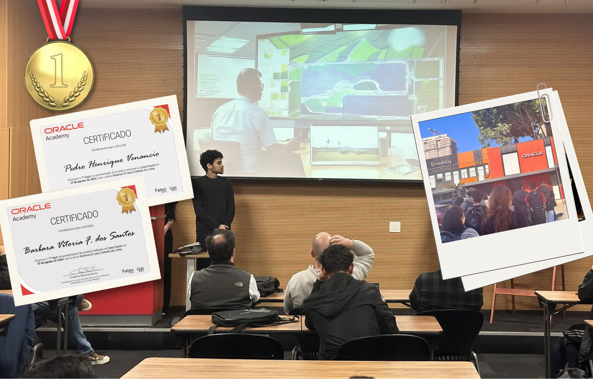
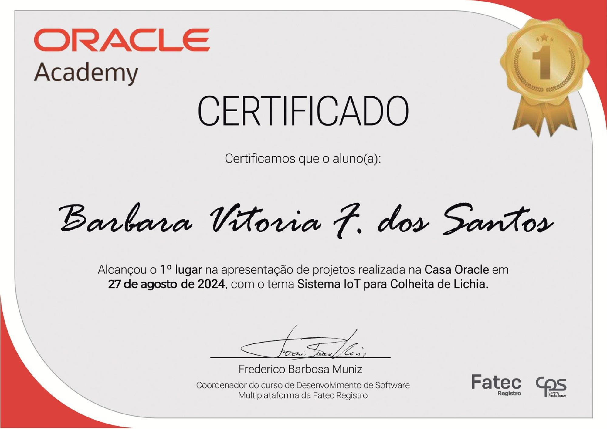
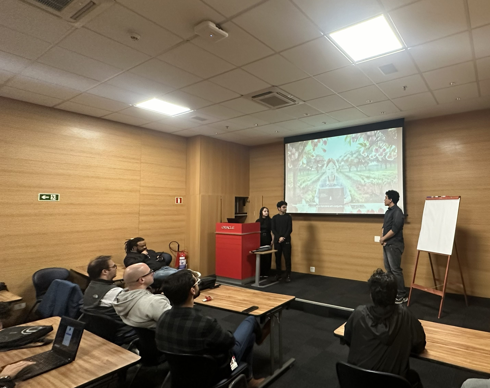
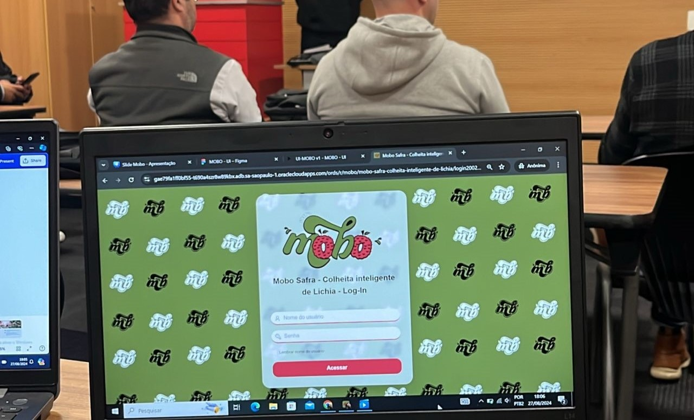
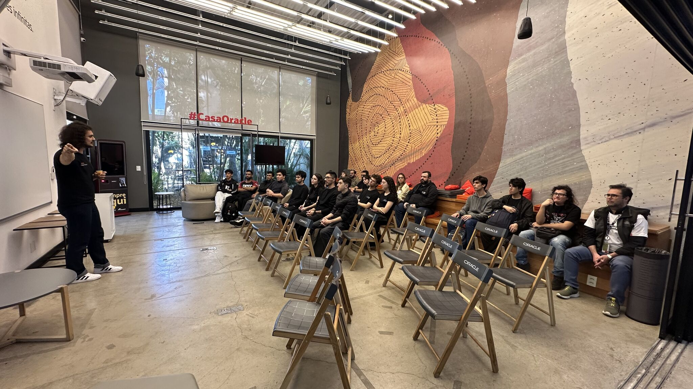
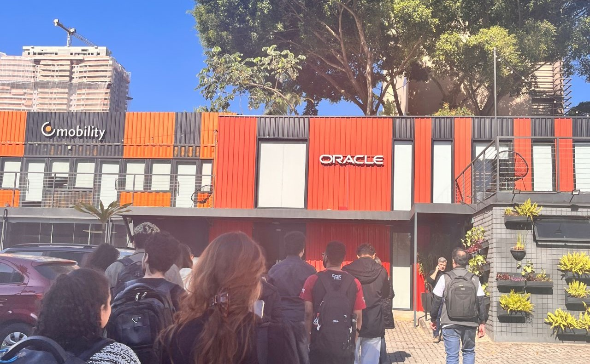

A equipe CypherWave conquistou o primeiro lugar no Oracle Apex Challenge com o projeto Mobo, um sistema IoT desenvolvido para otimizar a colheita de lichia. O reconhecimento aconteceu após a apresentação realizada na Casa Oracle, em São Paulo, onde especialistas da Oracle avaliaram os projetos desenvolvidos na plataforma Oracle Apex, destacando o Mobo como o grande vencedor da competição. 🥇

O projeto MOBO foi destaque entre diversas equipes pela sua aplicação prática de IoT, automação e análise de dados no agronegócio.
1º Lugar na competição
Uso da plataforma Oracle Apex
Projeto inovador em IoT
Equipe multidisciplinar
Certificado - Pedro Venâncio

Certificado - Bárbara Vitória



